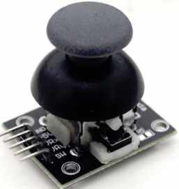
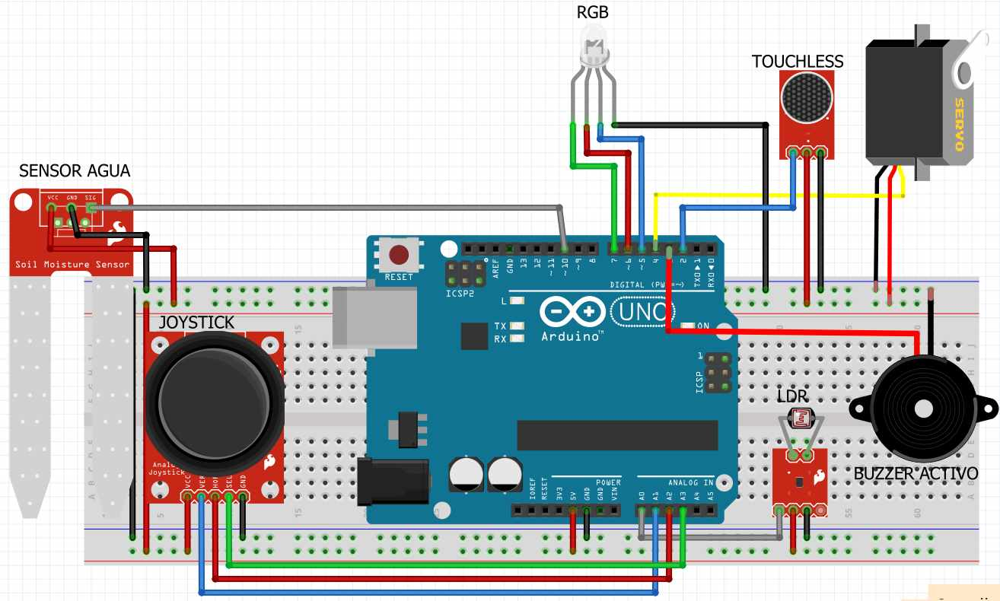
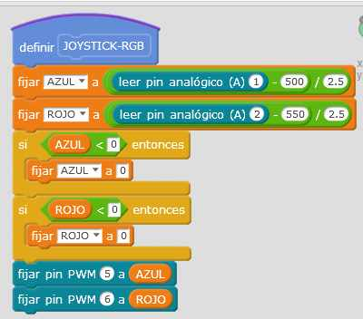
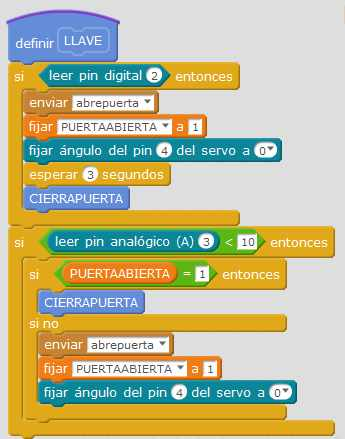

2.6 JOYSTICK
2.6.1 Conocimientos previos
2.6.1.1 JOYISTICK
Yo no sé qué tiene este componente que llama la atención a los chavales

Así que vamos a aprovecharlo: Tiene 2 potenciómetros según los ejes X e Y y un interruptor central. Las dos primeras salidas son analógicas, el microruptor lo trataremos también analógico, pues nos faltarán entradas y salidas digitales cuando lleguemos al final en 3.8 bluetooth.
Si quieres saber más de este componente visita esta página.
2.6.1.2 SALIDAS PWM
Como Arduino no tiene valores de salida analógicos, utilizaremos los pines PWM (~) para simular tensiones variables de salida.
De esta manera la luz Roja y Azul serán variables pudiendo crear el ambiente que queramos.
¿no sabes lo que es PWM (~)? eso es que no te has leído esto.

2.6.2 Objetivo
- Si muevo en el eje X el Joystick la luz RGB se enciende AZUL proporcionalmente a la inclinación del mando Joystick.
- Si muevo en el eje Y el Joystick la luz RGB se enciende ROJO proporcionalmente a la inclinación del mando Joystick.
- Si pulso el Switch central
- Si la puerta estaba cerrada la abre
- Si la puerta estaba abierta, la cierra, con los avisos correspondientes.
2.6.3 Esquema
Al ser un componente analógico lo conectaremos en las entradas analógicas:
- La salida eje X que gradúa la luz azul en A1
- La salida eje Y que gradúa la luz roja en A2
- La salida Switch central en A3 
2.6.4 Vídeo
2.6.5 Solución
El programa lo puedes descargar aquí
Se ha creado un nuevo bloque JOYSTICK-RGB que lee los pines de entrada A2 y A3.
Son valores desde 0 hasta +1024 pero la posición central del Joystick está en 500, luego tenemos que contar desde 500 hasta 1024, luego hay que convertirlos a 0-255
Esos valores ya normalizados transmitirlos a los pines digitales donde está conectado el pin rojo y azul del led RGB por PWM

También se ha añadido a LLAVE un condicional, según el valor A3 que es el Switch central del Joystick que decida si abrir o no la puerta según lo almacenado en una variable PUERTAABIERTA
